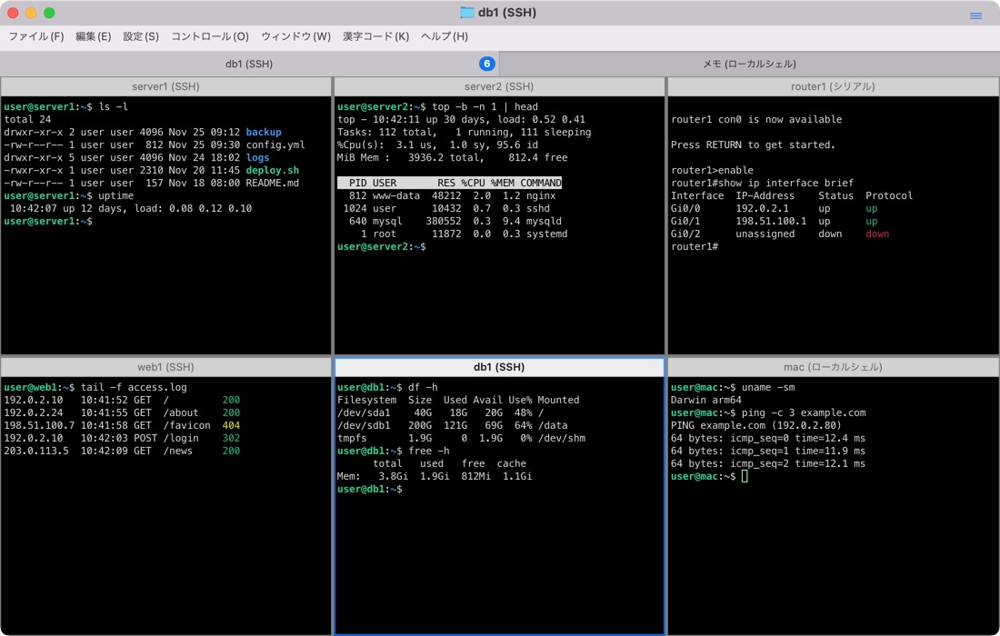
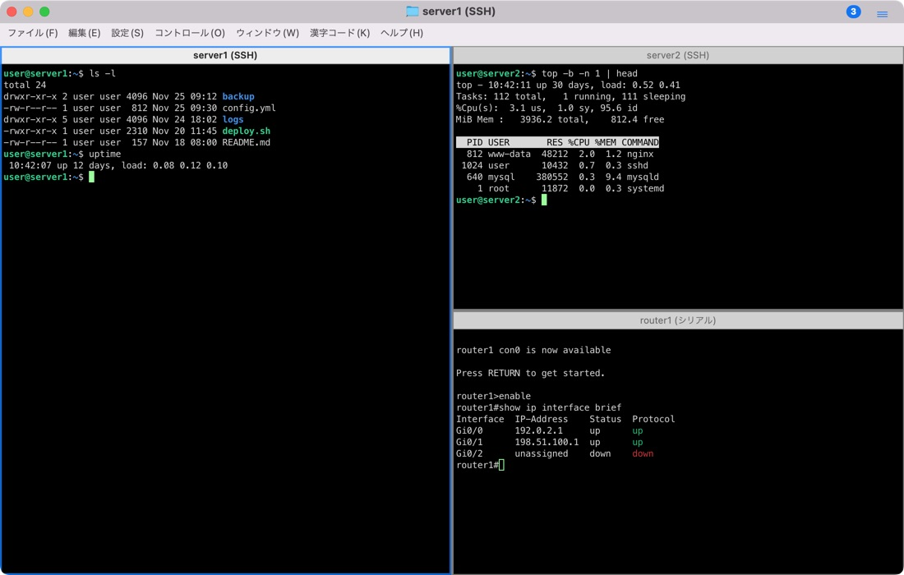
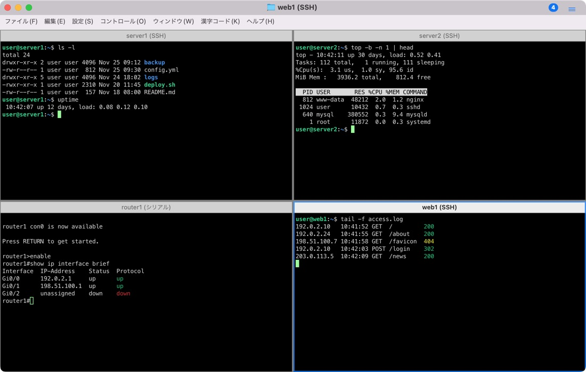

Tera Term Mac
おなじみの Tera Term を、Mac で。
SSH・Telnet・シリアル接続と TTL マクロが、そのまま使えます。

できること
Windows 版 Tera Term の使い勝手はそのままに、Mac のアプリとして作り直しました。
SSH・Telnet・シリアル
サーバーにもネットワーク機器にも。USB シリアルケーブルでのコンソール接続や、この Mac のローカルシェルも開けます。
TTL マクロ
Tera Term のマクロ処理系を移植しています。Windows で使っていた .ttl のマクロを、そのまま動かせます。
TeraTerm Menu
よくつなぐ接続先を登録して、メニューバーや Dock から一発で接続。パスワードは Mac のキーチェーンに保存します。
ログとファイル転送
ログの記録と再生。XMODEM・YMODEM・ZMODEM・Kermit・B-Plus・Quick-VAN でのファイル送受信。
漢字コードと 14 言語
UTF-8・Shift_JIS・EUC-JP・JIS などの切り替えに対応。画面は 14 言語で、macOS の言語に合わせて自動で選びます。
自動アップデート
新しい版が出るとお知らせ。更新内容を確かめて、その場で更新できます。
1 つのウィンドウに、いくつもの画面を
Mac 版だけの機能「TTMado」。タブやウィンドウをドラッグするだけで、左右・上下に並べられます。

- 入る場所は、青い枠で前もって見えます
- 入れ子の分割、並べ替え、端まで伸ばす、タブに戻す
- ウィンドウどうしの合体も、並びのまま
- 見出しのドラッグ・×・右クリックで、ふつうのタブと同じように操作
- 使わないときは設定でオフにできます


インストール
ダウンロードした DMG から、アプリケーションフォルダにコピーするだけです。
- 上の「ダウンロード」を押して、
TeraTermMac.dmgを保存します。 - DMG を開き、Tera Term Mac をアプリケーションフォルダへドラッグします。
- アプリケーションフォルダから Tera Term Mac を開きます。以降のアップデートは、アプリが知らせてくれます。
サポート
使い方はアプリのヘルプ ([ヘルプ] > [目次]) に、写真付きの「かんたんマニュアル」があります。